The programming of my portfolio was inspired by an initial version created on Wix.
I chose the colors based on those in my logo to ensure visual consistency.
Here are the different versions of my portfolio:
V1: Initial design on Wix.
V2: Custom programming, online publication, and adaptation of the Wix version.
V3: Addition of English and Japanese language options.
Here are the main changes made in this version of my online portfolio:

Removal of the "About" and "Contact" Pages: The "About" page only contained information already found in my CV, making it redundant within the context of the portfolio. Therefore, I decided to remove it. As for the "Contact" page, which featured links to my social media profiles, I couldn't find a satisfactory layout. So, I moved these links to the footer for better integration.
Removal of the Japanese Version: The requirement for a Japanese version came from a programming course during my DUT MMI. However, since I had to recreate each page three times and my Japanese proficiency is basic, I decided to remove this version to avoid any confusion about my language skills.
Layout Changes: I replaced the old images on the homepage, which previously linked to the removed pages, with images that now direct visitors to four projects in the categories of programming, audiovisual, and video games. To improve readability, I added new colors and a font with underlined and bold elements to highlight important information.

Addition of the "Video Games" category: As I accumulated projects in this field during my professional bachelor's degree, it became necessary to create a new category to organize them better.
Merging of the "Design" and "Video Production" Categories into "Audiovisual": To simplify navigation, I merged these two categories. The new "Audiovisual" category now encompasses all design and video production projects.
Addition, Removal, and Merging of Projects: I added several projects completed during my professional bachelor's degree while removing those I found less relevant. These were integrated into more comprehensive projects that gather all my work. Additionally, all my video creations are now organized based on the platforms where they were shared.

Moving Contact Information to the Footer: As mentioned earlier, the contact information has been moved to the footer, which is absent from the project pages to avoid overloading them with information.
Detailed projects:
The older projects on my portfolio lacked detail compared to the new ones.
I added images and additional information to make them more complete.
For example, I detailed Version 4 of this page, describing point by point the enhancements made in this portfolio version.
Programming languages & software used:

 
